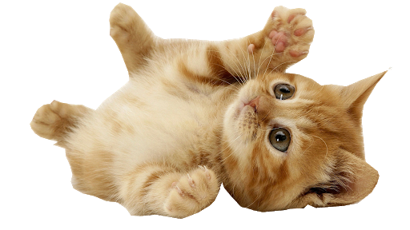

Como posso ajudar o projeto?
Recebemos muitas perguntas assim desde que o projeto teve início, então
preparamos uma listinha de como gostáriamos e precisamos da sua ajuda:
Doações monetárias: Ajudas monetárias são muito importantes pois nos
ajudam a comprar ração, remédios e outros itens importantes para o cuidado
dos gatinhos da casa.
Doações de ração e leite: Se você tem gatinhos ou deseja ajudar comprando um saco de ração,
ajudaria muito, leite também é muito importante para o desenvolvimento dos filhotes.
Adoção: Claro que essa opção não poderia faltar, temos muitos gatinhos que estão a
procura de um lar e de donos amorosos.
Para adotar, clique em contato para ser redirecionado ao nosso contato, e desde já,
muito obrigada! :)
